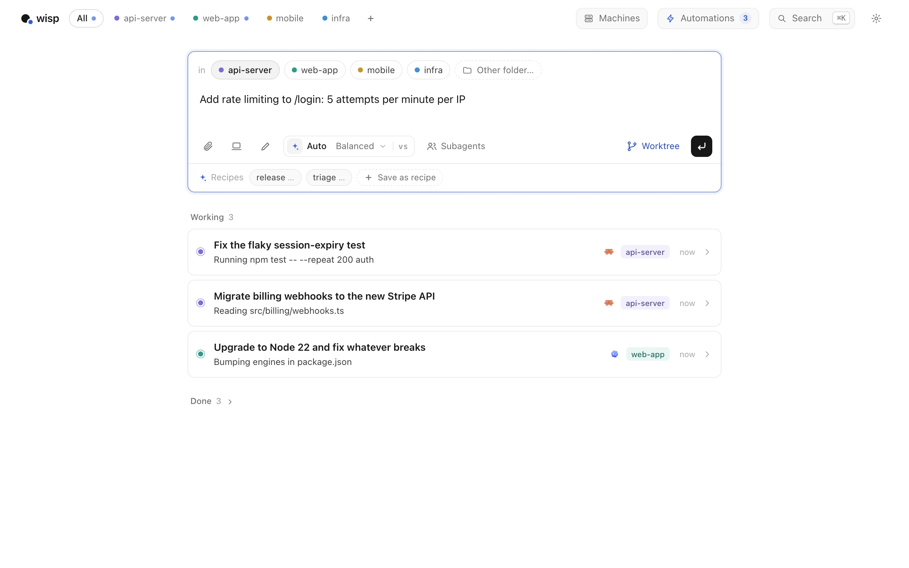
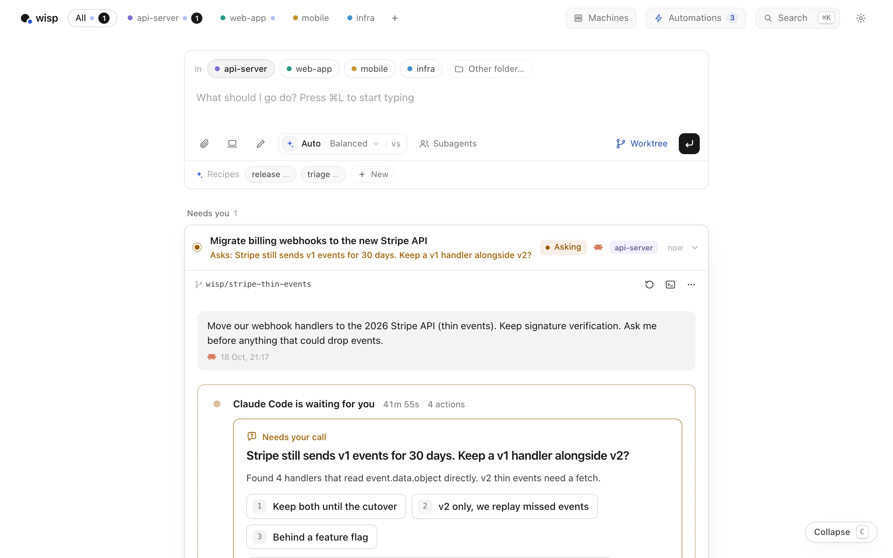
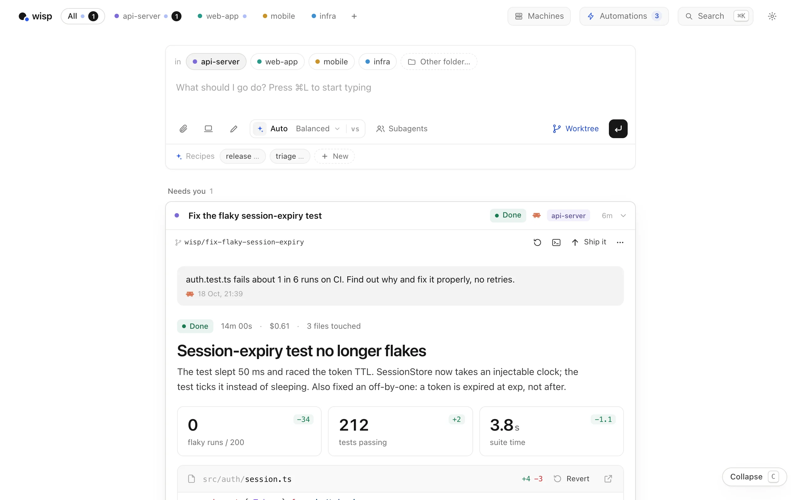
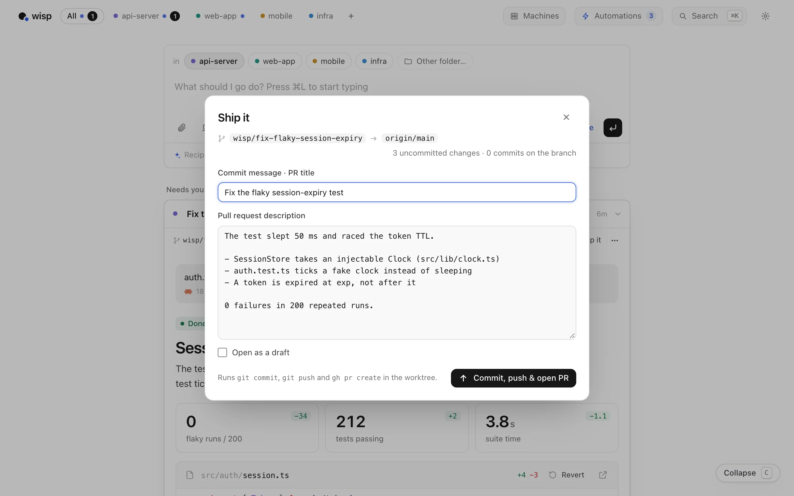
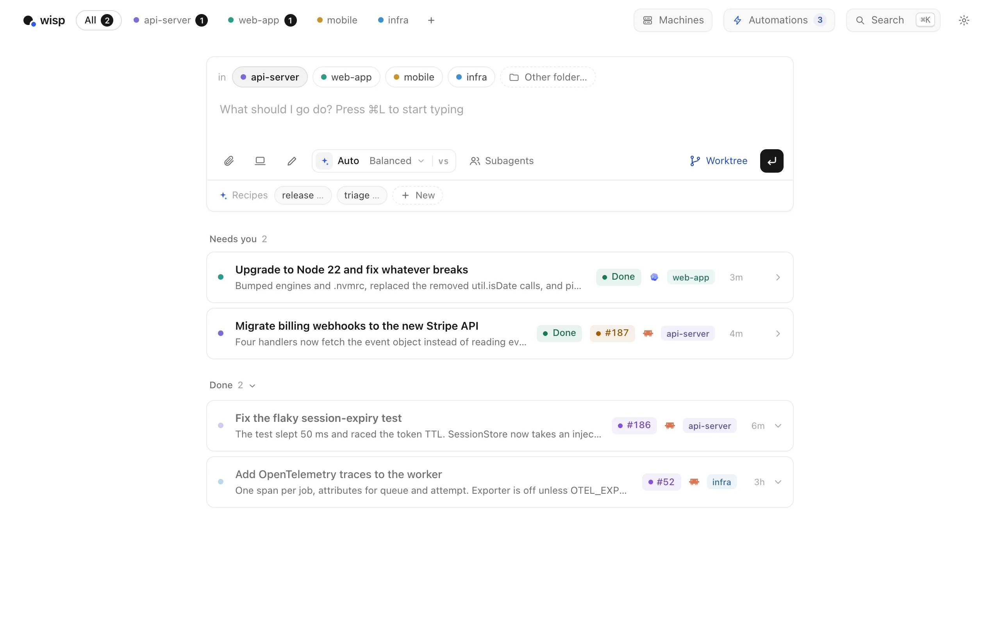
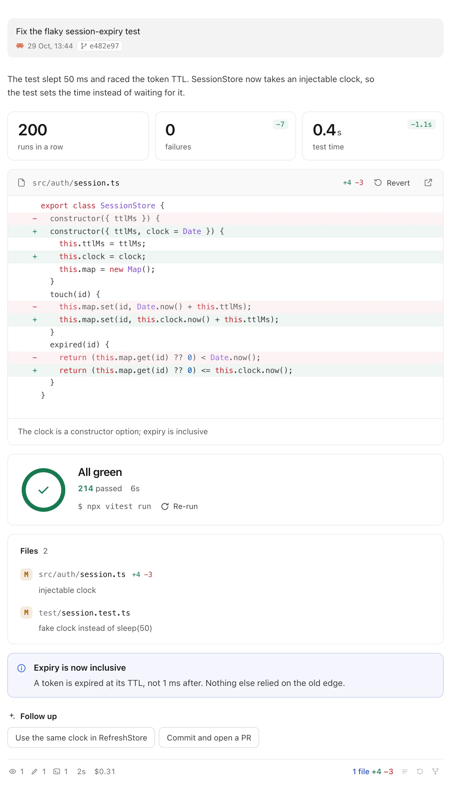
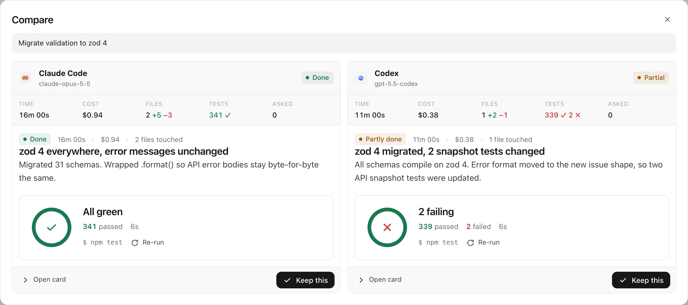
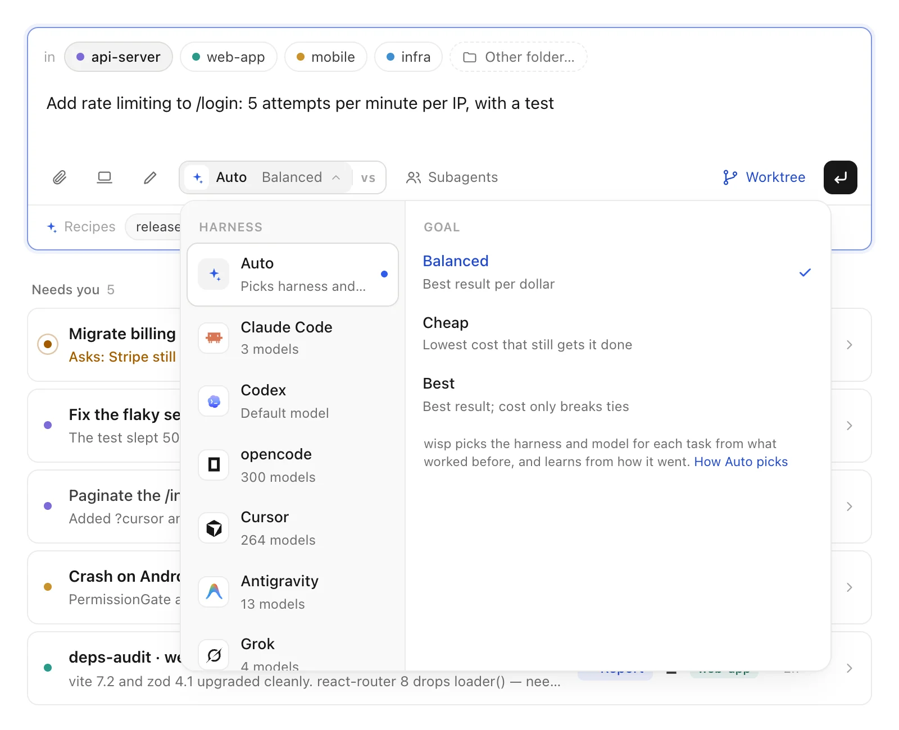
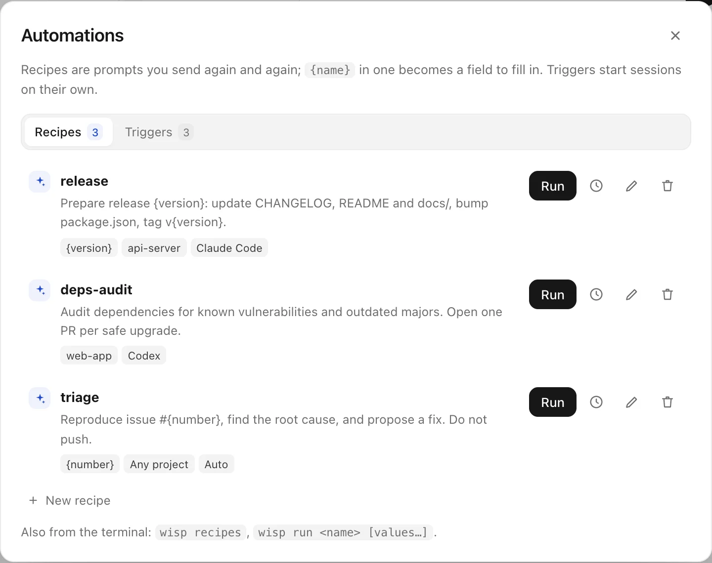

v0.23.0 · free and open source
Send coding agents off. Read what they did.
macOS · Linux and Windows in beta · Node 20+ · MIT
Hand tasks to Claude Code, Codex, Cursor and three other agent CLIs. They run in parallel in the background, each on its own branch, on this computer or your other machines. You get a one-screen report when one is done, or a question when it's stuck. Never a transcript.
Needs you 0
Working 0
A morning with wisp
Three tasks, ninety minutes,
about four minutes of your attention.
Hand off three tasks.
A flaky test, a Stripe migration, a Node upgrade. Each goes to its own worktree and branch, so they can't collide. Then you go and do something else.
One of them has a question.
Claude Code found a decision that's yours to make. It pauses and you get a notification. Pick an option and the answer goes straight back into the running session.
A report lands.
Not a log. A headline, the numbers that changed, the real diff, the test run, and what to do next. You can read it in a minute.
Ship it.
wisp has already drafted the commit message and PR description. One click commits, pushes and opens the pull request.
Merged. Queue clear.
The card follows CI and review on its own. Merge squash-merges and fast-forwards your local main. Two more reports are waiting when you're ready.





The report
Same run. Pick what you'd rather read.

- Real diffs. Captured from the agent's own edits, not summarised. Revert one file, or roll back the whole turn.
- Real tests. The command it ran and the result. Re-run it from the card.
- Next steps. One click turns a suggestion into a follow-up in the same session.
- Your call. E marks it done and opens the next one. T takes it over in your terminal.
Compare
Not sure which agent?
Run both and keep the winner.
Click vs in the launcher and one prompt runs on two harnesses at once, each in its own worktree. wisp lines them up: time, cost, files, tests, and both reports. Keep this archives the other. Claude Code vs Codex on your own repo →

Machines · follow-ups
Start on your laptop. Finish on the dev box.
Connect any computer you can SSH into and launch on it, or on several at once. Mid-task, the button next to the follow-up box moves the task: its branch, uncommitted changes and history go along, and the agent there carries on. The same follow-up can switch from Claude Code to Codex.
- Plain SSH
- Your keys and
~/.ssh/config. Nothing new listens on the network. - The work moves
- A git bundle lands in a worktree on the same branch. No checkout there? wisp clones it.
- So does the story
- The next agent gets every earlier request, report and edited file.
You stay in control
Pick the agent. Set the leash.
Take the wheel whenever you like.


{version} becomes a field. Run them on a schedule, when CI fails on main, or when an issue gets a label.Read-only. It investigates and proposes; nothing on disk changes. Issue triggers always start here.
File edits are accepted; shell commands that need approval are denied.
No prompts. The default: each task runs in its own worktree with checkpoints before every turn.
Press T to take over.
wisp opens your terminal in the task's worktree with the harness's own resume command. Ghostty, iTerm, Warp, kitty, WezTerm, Terminal, Windows Terminal and more.
| Harness | Take over runs |
|---|---|
| Claude Code | claude --resume <id> |
| Codex | codex resume <id> |
| Cursor | cursor-agent --resume <id> |
| opencode | opencode --session <id> |
| Antigravity | agy --conversation <id> |
grok --resume <id> |
From the terminal
Or never leave your shell.
wisp "…" launches a task in the current folder and starts the app if it isn't running. --wait blocks until the run is done and prints the report as markdown, so scripts, CI and other agents can use wisp too.
Also: an MCP server (wisp mcp), an agent skill, a JS SDK, an HTTP API and webhooks. Integrations →
Also in the box
- Several folders
- One task can span the API and the web app that uses it. Each repo gets its own worktree, and Ship it opens a PR in each.
- Subagents
- Give the lead a team on other harnesses. Claude Code can hand tests to three Codex copies through a
delegatetool. Multi-agent coding → - Checkpoints
- Every turn is snapshotted before it starts. Restore to before any turn, or revert one file.
- It learns
- After a session, a short retro records your preferences and the agent's mistakes. Later runs get them in their prompt.
- Phone
- Questions and finished tasks go to ntfy or Telegram. Answer from there, or start a task with
/new. - Keyboard
- N new, J/K move, O open, E done and next, ⌘K search everything.
- Attachments
- Paste a screenshot, drop a screen recording, a log or a PDF into the launcher.
- Usage
- Spend, success rate and questions asked, per project and per harness and model.
- Small and local
- A Node server with zero runtime dependencies and a vanilla JS UI. State is plain JSON in
~/.wisp.
wisp Cloud · early preview
Let it run while you sleep.
Managed machines, queues that keep going after you close the laptop, and one dashboard for your team. wisp on your computer stays free.
Pick the task you've been putting off.
A flaky test, a dependency bump, a small bug. You'll be set up in about a minute.
- 1Node 20+ and one agent CLI, signed in
Claude Code, Codex, Cursor CLI, opencode, Antigravity CLI or Grok Build.
- 2Run wisp
npx wisp-agentsOpens the desktop app. Add --browser for localhost:4477.
- 3Describe it, pick the folder, press Enter
Then go do something else. wisp tells you when it's done or needs you.
Questions
What is wisp?
wisp is a free, open-source launcher for AI coding agents. It runs agents like Claude Code and Codex on your projects in the background. When one finishes, it hands you a short report (the diff, test results, commits and next steps) instead of a long transcript.
Which coding agents does wisp support?
Claude Code (claude), OpenAI Codex (codex), opencode, Cursor CLI (cursor-agent), Antigravity CLI (agy) and Grok Build (grok). Each harness is one adapter file, so adding another is small.
Can I run Claude Code and Codex in parallel?
Yes. Every task runs in its own git worktree and branch, so Claude Code, Codex and the other agents can work on the same repo at the same time without colliding. Click vs in the launcher (or pass --compare codex) to run one task on both and keep the better run. Guide →
Can wisp run agents on several machines?
Yes. Machines connects to your other computers over SSH and starts wisp there. One prompt can run on several machines in parallel, every run lands in one queue, and the agents keep working when your laptop sleeps. Guide →
Can I move a task to another computer or agent mid-way?
Yes. Pick another computer with the Runs on button next to the follow-up box, and your next follow-up moves the task there: the branch and uncommitted changes travel as a git bundle into a worktree on the same branch, and the agent gets the earlier turns. The harness button next to it switches agents, say from Claude Code to Codex, in the same follow-up. Guide →
Is wisp free?
Yes. wisp is MIT-licensed and free. You use your existing Claude Code, Codex, opencode, Cursor, Antigravity or Grok account, and those providers bill as usual.
Does my code leave my machine?
wisp itself is a local server. Sessions and state are plain JSON in ~/.wisp. Your code only goes to the agent provider you choose, same as running that CLI directly. wisp sends anonymous usage stats with no prompts, paths or agent output. Turn them off with WISP_TELEMETRY=0 or DO_NOT_TRACK=1.
Can I take over a session in my terminal?
Yes. Press T and wisp opens your terminal in the project with the agent's resume command, for example claude --resume <id>. It works with Terminal, iTerm, Ghostty, Warp, kitty, WezTerm, Windows Terminal and more.
Can other tools send tasks to wisp?
Yes. wisp ships an MCP server (wisp mcp), an agent skill, a scriptable CLI, a JS SDK, an OpenAPI-described HTTP API and webhooks. You can hand tasks to it from other agents, editors, scripts or CI.
How do I install wisp?
Install Node.js 20 or later and sign in to at least one supported agent CLI. Then run npx wisp-agents to open the desktop app, or npx wisp-agents "fix the flaky auth test" to launch a task in the current folder.